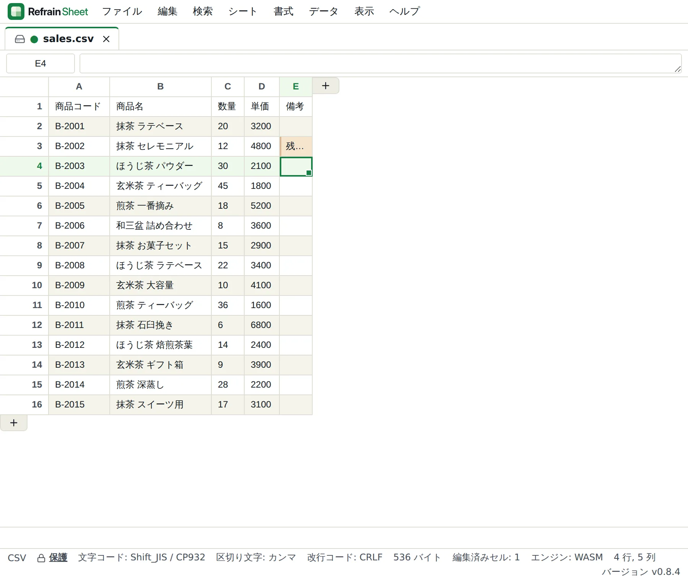
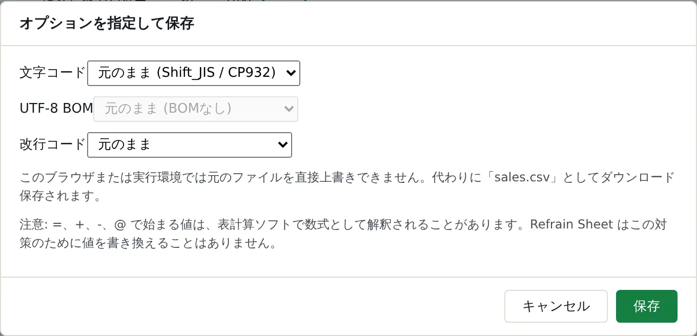
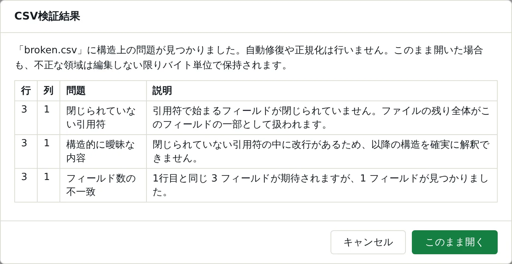
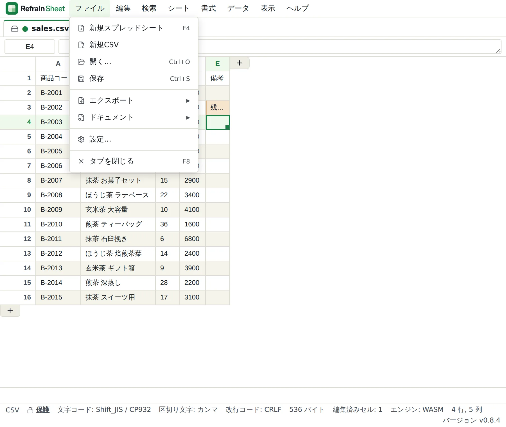
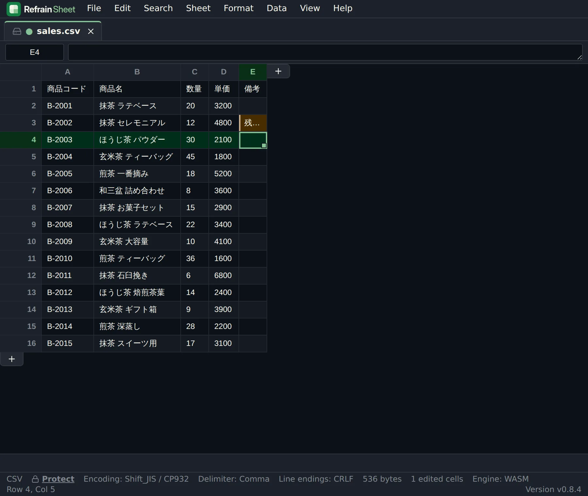

LOCAL-FIRST CSV EDITOR
CSVを壊さず編集。先頭ゼロ・文字コード・改行コードをそのまま保つ。
Shift_JIS / CP932対応。再インポート前のCSVを安全に修正する、ブラウザ完結のCSVエディタ。
会計・給与・勤怠・受発注・EC・基幹システムから出力したCSVを、Excelの自動変換なしで修正。Refrain Sheet は、変更したフィールド以外のバイトを保持して保存します。
取引先指定のCSV、インポート用テンプレート、商品・従業員マスタを「見た目だけでなく、データファイルとして」壊さず直したい方へ。
CSVの読み込み・編集・保存はブラウザ内で行われ、アプリ本体がファイルを外部のサーバーへ送信することはありません（Google Drive連携を使う場合を除く）。

THE PROBLEM
CSVは「表」ではなく、次のシステムへ渡すデータです。
表計算ソフトは、値を計算や表示に都合のよい形へ解釈します。そのため、郵便番号・社員番号・商品コード・口座番号の先頭ゼロが落ちる、「1-2」や「2024-01-01」が日付に変わる、16桁以上の番号の下位桁が失われる、文字コード（UTF-8とShift_JIS / CP932）の取り違えで文字化けする、引用符・カンマ・改行・BOM・空欄や「HH:mm」形式の時刻が変わる、といったことが起こり得ます。画面上は同じに見えても、次のシステムへ再インポートしたときのエラーや取り込み違いにつながります。
通常保存で勝手に変えないこと
- 改行コード（CRLF / LF）と区切り文字：混在していても統一しません
- ヘッダー行：レイアウトを整形しません
- セル前後の空白：足しも削りもしません
- 引用符（"）：不要な付け外しをしません
- BOM（ファイル先頭の文字コード識別子）：付け外ししません
- 壊れたCSV：勝手に修復・正規化しません
- 未編集フィールドのデコードできないバイト（文字化けして見える部分）：置き換えません
直すのは1セル。変えてよいのも、その1セルだけ。
備考だけを修正しても、ほかの列や改行、引用符まで作り直しません。正確には、編集したフィールドのバイト範囲だけを再シリアライズし、未編集部分のバイトはそのまま保持します。引用されていたフィールドは引用されたまま、新しい値に必要なときだけ引用符が付きます。
USE CASES
再インポート前のCSVを、安心して直すために。
業務システムの間を行き来するCSVの、よくある修正場面です。
会計・税務の仕訳・提出用CSV
指定された列構成や空欄、科目などのコード、Shift_JISの文字コードを保ったまま、修正した箇所だけを変更します。
人事・給与・勤怠の従業員CSV
社員番号・郵便番号・口座番号の先頭ゼロや「HH:mm」形式の時刻を、数値や時刻に変換せず文字列のまま扱います。
受発注・在庫・商品マスタCSV
商品コードやJANコード、備考を直しても、取引先指定の列順・区切り文字・引用ルールはそのまま維持します。
基幹システムと現場ツールの間のCSV
API連携の有無にかかわらず残る、CSV受け渡しの小さな修正作業に。直した箇所以外は元のファイルのまま渡せます。
原因の調査・診断が必要なCSV
フィールド数の不一致や閉じていない引用符を、勝手に直さず行・列つきで確認できます。
FEATURES
壊さないために、勝手に推測しない。
「数値に見えるから数値にする」「崩れているから直す」といった推測をせず、ファイルの状態を示して判断をユーザーに委ねます。文字コードの確認から壊れたCSVの診断、日本語入力まで、実務でCSVを扱うときにつまずきやすい点に対応しています。
文字コード・BOM・改行コードを確認して保存
UTF-8（BOMあり／なし）、Shift_JIS / CP932、EUC-JP に対応。自動判定に加えて文字コードを指定して開き直すこともでき、開き直しても元のバイトは変わりません。保存時は文字コード・BOM・改行コードを個別に選べるので、意図して変えたいときだけ反映できます。
- CP932で表現できない文字があると既定で保存を中止し、影響するセルを知らせる
- 改行コードの変換は行終端だけを書き換え、末尾の改行を勝手に足さない
- ステータスバーに文字コード・区切り文字・改行コード・サイズを常時表示

壊れたCSVも、自動修復せずに診断
閉じていない引用符、引用符の後の余分なテキスト、フィールド数の不一致を、行・列つきの一覧で示します。自動修復も正規化も行いません。開くかどうかはユーザーが判断でき、「このまま開く」を選べば、不正な箇所は編集しない限りバイト単位で保持されます。

日本語入力と、デスクトップアプリに近い操作
メニューバーからすべてのコマンドを実行でき、同じ操作にキーボードからも届きます。日本語入力は最初の1打鍵から扱えるので、ローマ字の1文字目が英字としてセルに入ることはありません。
- 変換中は Enter / Esc / 矢印キーがIMEのもの。確定してから初めてセルに届く
- Ctrl+F・Ctrl+H・F3 などの表計算キーはアプリの機能として働き、Ctrl+W・Ctrl+T・ズームなどブラウザに必要なキーは奪わない
- Alt+Enter でセル内改行、複数行の値もCSV・RSF・コピペを往復

先頭ゼロ・日付・長い番号を型推論で変えない
CSVの値は書かれた文字列のまま扱います。「0123」は「0123」のまま、「2024-01-01」や16桁以上の番号も、数値や日付に変換して書き戻すことはありません。
読み取り専用から始める保護モード
既存のファイルは既定で読み取り専用で開きます。編集するときは、ステータスバーのアイコンか ファイル > ドキュメント > ファイルの保護を解除 で切り替えます。この設定はタブごと・セッション限りで、ファイルには保存されません。
ほかにも：Markdownシート
RSFのファイルに Markdown シートを追加し、ソースとプレビューを並べてメモや手順書を書けます（シート > Markdownシートの追加）。MarkdownシートはCSVエクスポートの対象外です。
RSF SPREADSHEET
集計・比較・書式が必要なときだけ、RSFへ。
CSVには、数式、複数シート、書式、コメントを完全には表せません。Refrain Sheet は、CSVを無理にスプレッドシート化しません。必要なときだけRSF（.rsf）へ明示的に変換し、CSVの正本とは役割を分けます。変換しても元の .csv は変更されません。
FORMULAS
55関数：SUM・XLOOKUP・SUMIFS・TEXT・FILTER・UNIQUE ほか
MULTIPLE SHEETS
複数シート、シート間参照、絶対／相対参照、循環参照の検出
FILTER & SORT
フィルタと最大8階層の複数キー並べ替え。表示順が変わるだけで、データや数式は書き換わりません
FORMATTING
太字・斜体・下線・文字色・背景色・罫線。セルの値や数式には影響せず、Undoでき、.rsf に保存されます
EXPORT
オートフィット、選択範囲の統計、CSV / XLSX エクスポート
NO EVAL
数式エンジンは自作パーサ。eval も new Function も使いません
DATA VALIDATION
データ入力規則：選択範囲を値のリストまたは数値範囲に制限し、違反する入力を理由付きで拒否
CONDITIONAL FORMATTING
条件付き書式：比較・重複・2色スケールでセルの背景色を値に応じて自動着色
NUMBER FORMAT
数値の書式設定：数値・パーセント・通貨の表示形式を、小数桁数や桁区切りとともに指定
SQL QUERY
SQLクエリの実行：シートに対してローカルで動く読み取り専用のSELECTクエリを実行
COMPARE / DIFF
比較／差分：開いている2つのタブをキー列で比較し、追加・変更・削除・キー不整合を行ごとに判定
CELL COMMENT
セルコメント：セルの値とは独立した短いメモを添付。ホバーで内容を表示
COMMENTS PANEL
コメントパネル：シート単位・ファイル単位で全コメントを一覧表示。クリックでそのセルへジャンプ
DETAILS
英語UIとダークテーマも、標準装備。
日本語と英語はどちらも第一級のUI言語です。テーマはシステム設定に追従し、ライト／ダークを明示指定することもできます。表示の変更がCSVのバイトやRSFのデータを書き換えることはありません。

COMPARISON
Excelの代わりではなく、CSVの受け渡しを守る道具です。
表計算ソフトは計算・集計・可視化のための道具で、CSVを別のシステムへ渡すときに求められる性質とは目的が異なります。下の表では、Refrain Sheet の挙動と、ほかの製品を選ぶときに確認したい観点を並べています。
| 一般的な表計算ソフト | CSVエディタ（製品により異なる） | Refrain Sheet | |
|---|---|---|---|
| 主な目的 | 計算、集計、可視化 | CSVの閲覧・編集 | CSVをデータファイルとして編集・保存 |
| 値の扱い（先頭ゼロ・日付・長い番号） | 表示・計算のため型変換が起こり得る | 製品・設定により異なる | 値を型推論で書き換えない |
| 無編集で開いて保存 | 製品・開き方・設定に依存 | 製品・設定により異なる | 元ファイルとバイト単位で一致 |
| 1セルだけの修正 | 製品・設定に依存 | 製品・設定により異なる | 編集したフィールド以外のバイトを保持 |
| 文字コード | 製品・開き方に依存 | 製品により異なる | UTF-8・Shift_JIS / CP932・EUC-JPを判定。開き直しと保存時の指定が可能 |
| ファイルの処理場所 | 製品・利用形態に依存 | 製品・利用形態に依存 | 通常のCSV編集はブラウザ内でローカル処理 |
| 導入 | 製品により異なる | 製品により異なる | ブラウザで開くだけ。配布版はHTMLファイル1つで file:// でも動作 |
※ 一般的な表計算ソフト・他のCSVエディタの挙動は、製品・バージョン・設定によって異なります。Refrain Sheet の挙動はリポジトリのREADMEおよびテストで定義されています。
SECURITY
機密CSVは端末内で。必要なときだけGoogle Driveと直接やり取り。
CSVの読み込み・編集・保存はブラウザ内で行います。Google Drive連携を使うときだけ、ユーザーの操作に応じてGoogleと通信します。なお、この紹介ページのアクセス解析（同意した場合のみ）は、CSVを扱うアプリ本体とは別のものです。
通常のCSV編集は端末内で完結
ファイルはブラウザ内で読み込まれ、保存先もお使いの端末です。CDN・外部フォント・アナリティクス・テレメトリはありません。配布版はCSPで connect-src 'none' を指定し、通信そのものをブロックします。
Google Drive連携は、使うときだけ
ホスト版アプリで「ドライブから開く」「ドライブに保存」を選んだときだけ、Googleへのサインインと Google Drive API との通信が発生します。アクセス範囲は開いた・作成したファイルに限られ（drive.file スコープ）、アクセストークンはブラウザのメモリ上にのみ保持されます。ファイルは運営者のサーバーを経由せず、ブラウザとGoogle Driveの間で直接やり取りされます。配布版にはこの機能はありません。
コードを実行しない
セル内容はHTMLとして解釈されず、innerHTML・eval・new Function・マクロは一切使用しません。数式は専用エンジンで評価されます。
サプライチェーン対策
本番依存は4パッケージのみ（推移的依存ゼロ）、lockfile固定、install スクリプト無効化。リリースにはSHA-256・SBOM・ビルド来歴の署名が付きます。
GET STARTED
3ステップで使いはじめる。
ブラウザで開く
公開中のWebアプリをそのまま開くだけ。インストールもアカウント登録も不要です。
CSVをドラッグ＆ドロップ
ウィンドウのどこにドロップしてもOK。ファイルごとにタブが開きます。
オフラインで使う
リリースZIPを展開し、index.html をダブルクリック。file:// でも動作し、ネットワークに接続しません。
よくある質問
Excelの代わりになりますか？
目的が違います。Refrain Sheet はCSVを壊さずに直すためのエディタで、Excel互換を保証するものではありません。数式や書式が必要なときは、明示的にRSFスプレッドシートへ変換して使います。
先頭ゼロや長い番号は守れますか？
はい。値を型推論で変換しないため、「0123」や16桁以上の番号は書かれたとおりの文字列として扱われ、保存時もそのまま書き戻されます。ただし、取り込み先のシステムがその値を受け付けるかどうかは、取り込み先の仕様を事前にご確認ください。
データは外部へ送信されますか？
通常のCSV編集では送信されません。ファイルはブラウザ内で読み込まれ、保存もお使いの端末に対して行われます。ホスト版アプリでGoogle Drive連携を使ったときだけ、ユーザーの操作に応じてブラウザとGoogle Driveの間で直接ファイルをやり取りします。配布版はCSPでネットワーク接続そのものを禁止しています。
どの文字コードに対応していますか？
UTF-8（BOMあり／なし）、Shift_JIS / CP932、EUC-JP に対応しています。UTF-16 と ISO-2022-JP は現行リリースでは対応しておらず、該当しそうなファイルは警告を表示したうえでベストエフォートで開きます（元のバイトは変更されません）。
大きなCSVを開けますか？
既定の上限は512MiBで、設定で16MiB〜2GiBに変更できます。上限を超えるファイルは読み込む前に拒否されます。表示は仮想化されていますが、数百MB級のファイルは環境によって描画・編集が重くなることがあります。
壊れたCSVでも編集できますか？
開くことはできます。閉じていない引用符やフィールド数の不一致などを行・列つきで示したうえで、自動修復せずに開くかどうかを選べます。不正な箇所は編集しない限りバイト単位で保持されますが、壊れたままのデータを取り込み先のシステムが受け付けるとは限りません。
上書き保存はできますか？
Chromium系ブラウザでは File System Access API により元ファイルへ直接上書きできます。Firefox・Safari などではダウンロード保存にフォールバックし、その旨が通知されます。
CSVを編集したまま、数式や色を付けられますか？
CSVのままではできません。数式や書式（太字・色・罫線など）はRSFスプレッドシートの機能で、使うときはRSFへ明示的に変換します。CSVの正本に書式を埋め込むことはなく、書式設定はセルの値・数式の結果・CSVエクスポートを変更しません。
この紹介ページ自体にアナリティクスは入っていますか？
この紹介ページ（refrain-sheet.com）のみ、訪問数を把握するために Google Analytics を使う場合があります。読み込まれるのは、ページ下部の同意バナーで「同意する」を選んだ場合のみで、フッターの「Cookie設定」からいつでも選び直せます。CSVを編集するアプリ本体（app.refrain-sheet.com）はこの紹介ページとは別に配信されており、アクセス解析は含まれません。アプリ本体が通信するのは、Google Drive連携を使う場合だけです。
まずは、再インポート前のCSVを1つ開いてみてください。
インストールもアカウント登録も不要です。編集したセルは色付きで表示されるので、どこを直したかを確かめながら、必要なセルだけを修正できます。